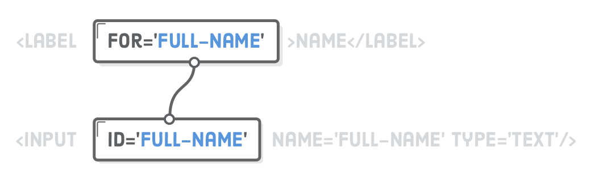

Елемент <form>
Елемент <form> - це контейнер для групи пов'язаних елементів форми. Наприклад, форма відгуку, реєстрації, оплати замовлення в інтернет-магазині. Кожен з цих компонентів інтерфейсу складається з групи інтерактивних елементів, згрупованих формою.
<form name="signup_form" autocomplete="on" novalidate>
<label>
<input type="email" name="email" />
</label>
<label>
Password
<input type="password" name="password" />
</label>
<button type="submit">Submit</button>
</form>
В елемента <form> немає обов'язкових атрибутів, тому в прикладі наведені кілька корисних необов'язкових.
- name - унікальне ім'я форми на поточній веб-сторінці. Використовується як на сервері, так і на клієнті під час роботи з формою. Може містити символи англійського алфавіту в будь-якому регістрі, цифри, підкреслення і тире. В імені не можна використовувати пробіл.
- autocomplete - визначає, чи може браузер автоматично заповнювати значення всіх елементів форми. Має всього два значення off і on. Цю поведінку можна буде змінити для кожного елемента форми.
- novalidate - атрибут-прапорець, не має значення. Каже браузеру не перевіряти валідність введених даних під час відправлення форми. Якщо атрибут не вказаний, виконується клієнтська валідація.
Відправлення форми:
По кліку на <button type="submit"> або під час
натискання клавіші Enter в будь-якому полі форми, вона «відправляється»,
що призводить до перезавантаження поточної сторінки. Це поведінка за
замовчуванням, яку можна буде змінити за допомогою JavaScript.
Елемент <label>
Елемент <label> пов'язує опис (мітку) з інтерактивним елементом форми. Текст мітки пов'язаний з елементом не тільки візуально, але й логічно. Наприклад, скрінрідер оголосить текст мітки, коли користувач поставить фокус на пов'язаний елемент. По кліку на мітці, пов'язаний елемент автоматично отримає ефект фокуса.
Якщо елемент форми, наприклад поле введення, вкладається в <label>, зв'язок створюється браузером автоматично. Клік на текст «Email» або «Password» поставить фокус у відповідне поле введення.
<form>
<label>
<input type="email" name="email" />
</label>
<label>
Password
<input type="password" name="password" />
</label>
<button type="submit">Submit</button>
</form>
Якщо елемент форми не вкладений в <label>, необхідно явно зв'язати їх за допомогою атрибута id елемента, що зв'язується, і атрибута for мітки.
<form>
<label for="user_email">Email</label>
<input type="email" name="email" id="user_email" />
<label for="user_password">Password</label>
<input type="password" name="password" id="user_password" />
<button type="submit">Submit</button>
</form>
Елемент <input>
Універсальний елемент для створення різноманітних полів введення. Тип поля визначається атрибутом type, значення якого за замовчуванням text - однорядкове текстове поле, що приймає будь-які символи.
<input type="text" name="username" />
Концептуально тег <input> представляє запис у словнику, який відправляється на сервер. Атрибут name визначає ім'я цього запису, а значення - це те, що ввів користувач. Ім'я поля повинно бути унікальним всередині форми. Значення атрибута name також використовується при роботі з формою в JavaScript.

Атрибут autofocus
Поле введення, якому заданий цей атрибут, автоматично отримає фокус під час завантаження сторінки, і в ньому можна відразу набирати текст. За замовчуванням атрибут не встановлений для жодного поля.
Оскільки фокус не може бути у кількох елементів одночасно, атрибут задається полю, з якого користувачеві варто почати заповнювати форму. Атрибут autofocus - логічний, тобто без значення, вказується тільки назва.
See the Pen lesson-11-autofocus by goit-academy (@goit-academy) on CodePen.
Корисно:
Через особливості платформи з прикладами, поле введення імені
користувача не отримує фокус під час завантаження сторінки. Роботу цього
коду можна перевірити у себе в редакторі.
Атрибут placeholder
Дозволяє відображати текст-підказку про те, які дані необхідно ввести в поле, коли елемент <input> порожній. Цей атрибут можна використовувати в будь-якому елементі форми, де є текстове введення.
See the Pen lesson-11-placeholder by goit-academy (@goit-academy) on CodePen.
Корисно:
Текст-підказка не замінює хороший <label>, а доповнює його
демонстрацією прикладу типу даних, які слід вводити.
Placeholders in Form Fields Are Harmful
- відео про те, як правильно проектувати доступні і легкі у використанні
елементи форм з мітками і підказками.
Пошта і пароль
Значення атрибута type впливає на тип поля, набір символів, які в нього можна ввести і подальшу валідацію значення. Наприклад, якщо браузер смартфона бачить поле з типом email, він відображає користувачеві спеціальну клавіатуру для введення електронної пошти з легко доступним символом @. Браузер також може надати спосіб вибрати адресу електронної пошти з адресної книги.
See the Pen lesson-11-email-and-password by goit-academy (@goit-academy) on CodePen.
Для типу password, значення пароля, що вводиться, буде візуально підмінено на маркери з міркувань безпеки. Атрибути minLength і maxLength - не обов'язкові. Вони дозволяють обмежити кількість символів, які можна ввести у полі.
Радіо-кнопки (перемикачі)
Якщо задати атрибуту type значення radio - інпут перетвориться у перемикач (радіо-кнопку, radio button). Радіо-кнопки завжди йдуть групами, що дозволяє користувачеві вибрати одне з безлічі визначених значень.
Кожній радіо-кнопці в групі задається однакове значення атрибута name, інакше браузер не знатиме, що це група.
See the Pen lesson-11-radio-buttons by goit-academy (@goit-academy) on CodePen.
На відміну від текстових полів, в радіо-кнопку не можна вводити дані, тому кожній з них необхідно вказати значення в атрибуті value. Це значення, яке буде передане на сервер, коли користувач відправить форму.
Логічний атрибут checked вказує на те, який перемикач буде обраний (відмічений) за замовчуванням. У групі радіо-кнопок в стані checked може бути тільки один елемент.
Чекбокси (прапорці)
Прапорці (чекбокси, checkbox) схожі на перемикачі, але дозволяють вибирати довільну кількість значень, тобто багато з багатьох . Чекбоксів може бути ціла група, наприклад, вибір хобі, або тільки один, наприклад, прийняття згоди користувача під час реєстрації.
See the Pen lesson-11-checkboxes by goit-academy (@goit-academy) on CodePen.
Числа
Звичайні текстові поля приймають буквально все: цифри, літери, пробіли, розділові знаки тощо. Для того, щоб дозволити вводити тільки числа, з можливістю обмежити діапазон, використовується тип поля number. При введенні даних у числове поле браузер автоматично ігнорує всі символи, крім цифр.
<label>
Age
<input type="number" name="age" value="0" min="18" max="120" />
</label>
Звичайно ж, існує багато чисел, які не підходять для кожного типу числових даних. Наприклад, може бути необхідно заборонити введення занадто великих, або від'ємних чисел. Ця проблема вирішується за допомогою атрибутів min і max, які визначають діапазон введення.
За замовчуванням числові поля приймають тільки цілі числа. Цю поведінку можна змінити за допомогою атрибута step, який вказує крок зміни числа. За замовчуванням значення кроку дорівнює 1.
See the Pen lesson-11-number-input by goit-academy (@goit-academy) on CodePen.
Телефонні номери
Тип tel створює поле введення телефонних номерів, які можуть бути представлені у різних форматах. Зараз єдина користь від застосування поля типу tel полягає у відображенні віртуальної клавіатури для введення телефонних номерів у мобільних браузерах, яка містить цифри, але не літери.
<form>
<label>
Phone number
<input type="tel" name="phone_number" />
</label>
<button type="submit">Submit</button>
</form>
Повзунки
Тип range використовується для створення повзунків з цілими і дробовими значеннями. Атрибути min і max встановлюють діапазон значень, а step контролює крок. Щоб встановити значення, потрібно просто перетягнути повзунок у потрібну позицію між мінімальним і максимальним значеннями.
See the Pen lesson-11-range-input by goit-academy (@goit-academy) on CodePen.
Цікаво:
Браузери не надають жодної візуальної зворотної інформації про
встановлене значення. Це робиться за допомогою JavaScript і додаткової
розмітки.
Дата та час
У браузерах є вбудований календар, в якому користувач може вибрати необхідну дату та/або час. Атрибути min і max дозволяють встановити мінімальні і максимальні дати, за умови використання правильного формату.
See the Pen lesson-11-date-input by goit-academy (@goit-academy) on CodePen.
Цікаво:
Через різний зовнішній вигляд у різних браузерах і складність його зміни
за допомогою CSS, замість нативного календаря найчастіше використовують
готові JavaScript-бібліотеки.
Елемент <textarea>
Створює багаторядкове текстове поле для введення великої кількості тексту. Наприклад, для зворотного зв'язку, коментаря, поста у соцмережах, уточнення деталей замовлення тощо.
See the Pen lesson-11-textarea by goit-academy (@goit-academy) on CodePen.
Атрибут rows встановлює кількість рядків (висоту), а cols - стовпчиків (ширину). На практиці вказується тільки rows, а ширина елементу контролюється за допомогою CSS.
За замовчуванням елемент <textarea> можна розтягувати за горизонталлю і вертикаллю. Для того щоб контролювати можливість зміни розміру користувачем, в CSS є властивість resize.
resize: both | horizontal | vertical | none
Елемент <select>
Випадне меню - це альтернатива радіо-кнопкам, оскільки за замовчуванням дозволяє вибрати один з багатьох варіантів. Елемент <select> - це спливаюче меню з атрибутом name, що містить набір елементів <option> з атрибутом value.
Текст всередині елемента <option> відображається користувачеві, а значення атрибута value - це те, що буде використано під час відправлення форми.
See the Pen lesson-11-select by goit-academy (@goit-academy) on CodePen.
Корисно:
За замовчуванням вибраний перший елемент <option> зі списку. Це
можна змінити, задавши необхідній опції атрибут-буль selected.
Групування опцій
Іноді потрібно розбити список на окремі групи, не пов'язані між собою. Для цих цілей існує тег <optgroup>. Щоб додати заголовок групи, використовується атрибут label.
See the Pen lesson-11-select-with-grouped-options by goit-academy (@goit-academy) on CodePen.
Елемент <datalist>
Автозаповнення - це прийом, з яким знайомі всі користувачі. Під час введення символів у текстове поле пошукова система пропонує різні варіанти автозаповнення. Під час набору нового повідомлення електронної пошти, поштовий клієнт пропонує список отримувачів тощо.
Елемент <datalist> створює список попередньо встановлених значень, які можна вибирати під час набору в пов'язаному текстовому полі. Цей список прихований і стає доступним під час отримання інпутом фокуса і набору тексту в ньому. Список, що створюється елементом <datalist>, зв'язується з текстовим полем за допомогою атрибута id. Його значення повинно збігатися зі значенням атрибута list тегу <input>.
See the Pen lesson-11-datalist by goit-academy (@goit-academy) on CodePen.
Елементи <option> також можуть мати атрибут value. Це корисно, якщо текст опції та значення не збігаються. Наприклад, користувач може не знати скорочення штату в США. У випадному меню він побачить список штатів та їх скорочень, а вибираючи опції, текстове поле буде заповнено лише значенням опції.
See the Pen lesson-11-datalist-with-values by goit-academy (@goit-academy) on CodePen.
Групування полів
Групування пов'язаних елементів робить форми зрозумілішими для користувачів. Це також допомагає користувачеві зосередитися на невеликих упорядкованих групах полів, а не намагатися зрозуміти всю форму відразу. Групування виконується як візуально в інтерфейсі, так і логічно в коді.
Елементи <fieldset> і <legend>
Елемент <fieldset> - це контейнер для групування декількох пов'язаних елементів у формі, а вкладений <legend> виконує роль заголовка групи. Пов'язані радіо-кнопки і чекбокси завжди повинні бути згруповані, інші типи полів групуються у разі потреби.
See the Pen lesson-11-fieldset by goit-academy (@goit-academy) on CodePen.
Групування з можливістю оформлення
Елементи <fieldset> і <legend> мають відмінну семантику, але обмежені можливості оформлення. Здебільшого для групування елементів форми використовується <div> з атрибутами доступності role і aria-labelledby.
<div role="group" aria-labelledby="contact-details-head">
<p id="contact-details-head">Enter your contact details</p>
Related elements
</div>
- Атрибут role="group" вказує на те, що елементи всередині цього <div> є частиною групи.
- Атрибут aria-labelledby="contact-details-head" містить ідентифікатор елемента з описом групи.
See the Pen lesson-11-wai-aria-grouping by goit-academy (@goit-academy) on CodePen.